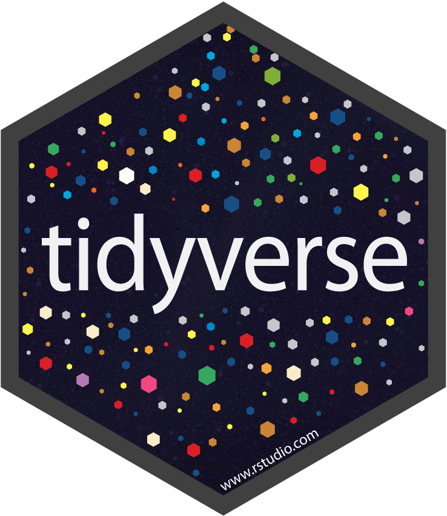
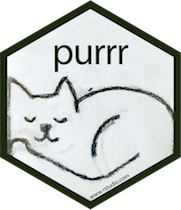
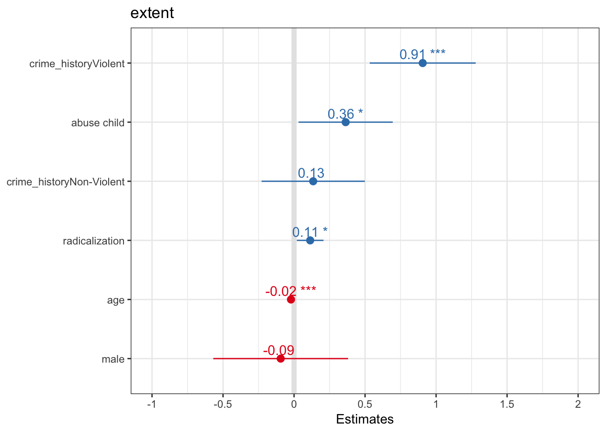

Einführung in Computational Social Science mit R
Liebe Studierende,
die R User Group Stuttgart bietet einen kostenlosen Einführungsworkshop in Computational Social Science mit der Statistik-Software R an. Der Workshop eignet sich sowohl für Beginner als auch Leute die bereits Erfahrung mit R gemacht haben. Gemeinsam bearbeiten wir den PIRUS Datensatz, welcher Informationen auf individueller Ebene zu Hintergründen, Attributen und Radikalisierungsprozessen von über 1.800 politischen Extremisten in den USA beinhaltet. Ziel des Workshop ist, dass die Studierenden selbst eine Analyse in R durchgeführt haben um danach eigene Fragestellungen untersuchen zu können. Dazu werden wir sowohl moderne Tools zur Datenverarbeitung und Visualisierung benutzen, als auch erste statistische Modelle implementieren. Statistische Vorkenntnisse sind zwar von Vorteil, müssen aber nicht vorhanden sein. Der Workshop findet am 09.11.2018 von 9-16 Uhr im CIP Pool der Seidenstraße (M36.2) statt.
\[x^2 = 1 + 1\]
Wenn euer Interesse geweckt ist, meldet euch bitte unter folgendem Link an damit wir mit euch planen können:
Alle weiteren Informationen findet ihr in unserer Facebook-Gruppe: https://www.facebook.com/groups/rstuttgart/
Wir freuen uns auf euer Erscheinen,
die R User Group Stuttgart
Tools

Packages
 

Not discussed in this Workshop
 

Workflow

- Import data into R: read_csv(), readLines(), read_delim()
- Tidy data - variables per column, observation by row
- Tranform with dplyr
- Visualize with ggplot2
(Wickham and Grolemund, 2017)
Dies ist ein 5 Stunden Einführungsworkshop für Sozialwissenschaftler der für die Uni Stuttgart 9.11.2018 konzipiert wurde.
Nach Abschluss dieses Workshops sie sie in der Lage
- Erstellen eines eigenen R Markdown-Dokuments
- Erstellen Sie Abbildungen und Tabellen, auf die Sie im Text verweisen können, und aktualisieren Sie Ihre Daten
- Exportieren Sie Ihr R Markdown-Dokument in PDF, HTML und Microsoft Word
- Verwenden Sie Tastenkombinationen, um den Arbeitsfluss zu verbessern
- Zitieren Sie Forschungsartikel und erstellen Sie eine Bibliographie
Je nach Zeit können wir auch die folgenden Bereiche abdecken:
- Ändern Sie die Größe und den Typ Ihrer Figuren
- Erstellen Sie Beschriftungen für Ihre Figuren und referenzieren Sie sie im Text
- Zitieren Sie Forschungsartikel und erstellen Sie eine Bibliographie
- Debuggen Sie und behandeln Sie häufig auftretende Fehler
Data
| ID | Name | Type | Label | missings | Values | Value Labels |
|---|---|---|---|---|---|---|
| 1 | subject_id | numeric | 0 (0.00%) | range: 1000-9411 | ||
| 2 | age | numeric | 83 (4.45%) | range: 15-88 | ||
| 3 | gender | numeric | 0 (0.00%) | range: 1-2 | ||
| 4 | student | numeric | 805 (43.16%) | range: 0-1 | ||
| 5 | abuse_child | numeric | 0 (0.00%) | range: 0-3 | ||
| 6 | crime_history | numeric | 854 (45.79%) | range: 0-3 | ||
| 7 | extent | numeric | 27 (1.45%) | range: 0-5 | ||
| 8 | terror_group | character | 730 (39.14%) | Abu Nidal Organization (Fatah al-Qiyadah al-Thawriyyah) Al Qaeda al-Itihaad al-Islamiya al-Qaeda (unspecified) al-Qaeda core |
||
| 9 | radicalization | numeric | 193 (10.35%) | range: 0-5 | ||
| 10 | type | character | 0 (0.00%) | Far Left Far Right Islamism Single Issue |
||
## Observations: 1,865
## Variables: 10
## $ subject_id <dbl> 1000, 1001, 1002, 1005, 1006, 1010, 1013, 1014,...
## $ age <dbl> 32, 20, 28, 25, 25, 27, 23, 28, 26, 25, 25, 24,...
## $ gender <dbl> 2, 2, 2, 2, 2, 2, 2, 2, 2, 2, 2, 2, 2, 2, 2, 2,...
## $ student <dbl> 1, 1, 0, 0, 0, 0, 0, 0, 0, 0, 0, 1, NA, 1, 0, 0...
## $ abuse_child <dbl> 0, 0, 0, 0, 0, 0, 0, 0, 0, 0, 0, 0, 0, 0, 0, 0,...
## $ crime_history <dbl> 3, 0, 3, 0, NA, NA, 1, 1, 1, NA, NA, 0, NA, 0, ...
## $ extent <dbl> 2, 0, NA, 5, 5, 2, 0, 0, 0, 0, 0, 0, 1, 0, 0, 0...
## $ terror_group <chr> "al-Qaeda core", "Taliban", "al-Qaeda core", NA...
## $ radicalization <dbl> 4, 5, 5, 5, 5, 5, 2, 2, NA, 2, 5, 3, 2, 5, 5, 5...
## $ type <chr> "Islamism", "Islamism", "Islamism", "Islamism",...
library(highcharter)
data(diamonds, economics_long, mpg, package = "ggplot2")
library(dplyr)
hchart(diamonds$price) Grundlagen
Zunächst einmal die Basics zu Rmarkdown.
Das ist ein Chunk:
print("Hello World!")## [1] "Hello World!"Klick doch einfach mal auf den grünen “Play” Button.
R als Taschenrechner
+addieren-subtrahieren*multiplizieren/dividieren^exponieren
Aufgaben:
34+77
(500 geteilt durch 125) plus 3 mal 6 hoch 2
Berechne die Differenz zwischen 2018 und dem Jahr, an dem du begonnen hast zu studieren und dividiere das durch die Differenz zwischen 2018 und dem Jahr, in dem du geboren wurdest. Multipliziere dies mit 100, um den Prozentsatz deines Lebens zu erhalten, den du an die Uni verbracht hast.
34 + 77 ## [1] 111(500 / 125) + 3 * 6^2## [1] 112(2018 - 2013)/(2018 - 1991)## [1] 0.1851852Objekte und Zuweisung
In R kann man je nach Rechenleistung zehntausende Datensätze auf einmal laden und verarbeiten. Das wird möglich da jeder Datensatz seinen eigenen Namen besitzt. Dieser muss mit einem Buchstaben beginnen, kann aber durchaus auch . oder _ oder Zahlen enthalten. Um einem Objekt einen Namen zuzuweisen wird das Zeichen <- (Zuweisungspfeil) eingesetzt. Objekte können einzelne Zahlen, Variablen oder auch Datensätze sein. Mit den Objektennamen können Daten jeglicher Art abgespeichert und abgerufen werden.
Führe einfach mal den folgenden Chunk aus!
x <- 2 #definiere x als 1
x## [1] 2Aufgaben:
- Erstelle ein neues Objekt y mit deiner Lieblingszahl. Adddiere x und y und speichere das Ergebnis in z. Gebe z aus!
y <- 21
z <- x + y
z## [1] 23Wichtige Operatoren
Boolean
&(logisch) und|(logisch) oder!(logisch) nicht
Weitere Operatoren
==(logisch) ist gleich!=(logisch) ist ungleich%in%(string) ist gleich>größer als<kleiner als>=größer gleich<=kleiner gleichis.na()ist gleich NA (fehlender Wert)!is.na()ist ungleich NA
Beispiele
3 == 3 #ist 3 gleich 3?## [1] TRUE4 > 5 #ist 4 größer als 5?## [1] FALSE"albert" == "albert" #ist albert gleich albert vor?## [1] TRUER gibt hier entweder TRUE oder FALSE aus, abhängig davon ob der benutzte logische Operator zutrifft oder nicht.
Vektoren I
Vektoren in R sind einfach mehrere Werte die aneinander gebunden werden. Diese können Zahlen aber auch strings (Buchstabenfolgen) sein. Hiflreich dabei ist die c() Funktion (c steht für concatenate = verketten auf Deutsch).
Beispiele:
c(4, 1, 3, 4, 8)## [1] 4 1 3 4 8vektor <- c(4, 1, 3, 4, 8) #definiere Vektor mit den Werten 4, 1, 3, 4 und 8
vektor## [1] 4 1 3 4 8Operatoren können auch ganz einfach mit Vektoren angewandt werden.
vektor * vektor #vektor mit sich selbst mal nehmen## [1] 16 1 9 16 64vektor == vektor #sind alle Werte von vektor gleich alle Werte von vektor?## [1] TRUE TRUE TRUE TRUE TRUEAufgabe
- Bilde einen Vektor mit dem Namen
cmund den folgenden Größen in Zentimeter:
190152174
Teile dann cm durch Hundert um die Größen in Meter zu erhalten!
cm <- c(190, 152, 174)
cm / 100## [1] 1.90 1.52 1.74Wollen wir auf einen bestimmten Wert in unserem Vektor zugreifen, dann benutzen wir eckige Klammern [...] auf die folgende Art und Weise:
vektor ## [1] 4 1 3 4 8vektor[3] #gibt uns das dritte Element von vektor aus## [1] 3vektor[5] #gibt uns das fünfte Element von vektor aus## [1] 8vektor[1] / vektor[4] #teile die erste Stelle von vektor durch die fünfte Stelle von vektor## [1] 1Funktionen
Das Ziel einer Funktion ist es Daten zu verarbeiten. Dazu gibt es einen input und einen output.
Definieren wir doch mal eine Funktion, welche Werte die man als input eingibt wieder quadriert als output gibt. Dazu benutzen wir function() und bestimmen dabei die Argumente welche wir jeweils eintippen wollen. Die Funktion selber wird in geschweiften Klammern {} codiert.
Beispiele:
quadrieren <- function(input) {
output <- input^2 #nehme den input hoch 2 und speichere ihn in output
return(output) #gebe output aus
}
#Funktion ausprobieren!
quadrieren(9) ## [1] 81Wir können auch zwei oder mehrere Argumente zu einer Funktion hinzufügen. Probieren wir das gleiche doch mal mit einer Funktion die jeder aus dem Physik - Unterricht kennen sollte:
Distanz = Geschwindigkeit * Zeit
\[Distanz = Geschwindigkeit \times Zeit\]
bzw.
\[s = v * t\]
s = v * t
distanz <- function(v, t) {
s <- v * t #v mal t und definiere deren Ergebnis als s
s #gebe s aus
}
#Funktion ausprobieren!
distanz(v = 50, t = 6)## [1] 300Nun müssen wir allerdings nicht immer selber Funktionen definieren. Im Gegenteil! Base R und die vielen Packages haben unzählige Funktionen, die Datenbearbeitung einfach machen. Beispielsweise gibt mean() den Mittelwert eines Vektors aus und sd() gibt die Standardabweichung.
vektor2 <- 1:5
mean(vektor2) #gib den Mittelwert von vektor aus## [1] 3sd(vektor2) #gib die Standardabweichung von vektor aus## [1] 1.581139Vektoren II
Nun eine kleine Übersicht über die Arten von Vektoren:
Es gibt drei Haupttypen
- Character: aka “String” oder ‘String’, ist einfach nur Text.
- Factor: Factors können eine Reihenfolge haben sogennante Levels.
- Numeric: Jeglicher Zahleninput mit dem man rechnen kann.
char <- c("Männlich", "Weiblich")
fac <- factor(c("Männlich", "Weiblich"))
num <- c(1, 2, 3)
class(char)## [1] "character"class(fac)## [1] "factor"class(num)## [1] "numeric"Tranformation zwischen den Datentypen
as.character()as.factor()as.numeric()
as.character(num)## [1] "1" "2" "3"as.factor(char)## [1] Männlich Weiblich
## Levels: Männlich Weiblichas.numeric(fac)## [1] 1 2Data
Packages and Folders
pacman::p_load(tidyverse, janitor, EnvStats, ggthemes, texreg, openxlsx, data.table)Data
recode_missings <- function(x) {
ifelse(x %in% c(-88, -99), NA, x)
}
start_pirus <- openxlsx::read.xlsx("start_pirus_2018.xlsx") %>%
janitor::clean_names() %>%
mutate_all(recode_missings) %>%
mutate(
type = case_when(
radicalization_islamist == 1 ~ "Islamism",
radicalization_far_right == 1 ~ "Far Right",
radicalization_far_left == 1 ~ "Far Left",
radicalization_single_issue == 1 ~ "Single Issue"
) %>%
forcats::fct_relevel("Single Issue")
) %>%
mutate(unemployed = ifelse(employment_status %in% 2:3, 1, 0)) %>%
mutate(married = ifelse(marital_status == 2, 1, 0)) %>%
mutate(male = ifelse(gender == 2, 1, 0)) %>%
mutate(mental = ifelse(psychological %in% 1:2, 1, 0)) %>%
mutate(
crime_history = case_when(
previous_criminal_activity == 0 ~ "None",
previous_criminal_activity == 1 ~ "Non-Violent",
previous_criminal_activity == 2 ~ "Non-Violent",
previous_criminal_activity == 3 ~ "Violent"
) %>%
forcats::fct_relevel("None")
) %>%
select(
subject_id,
age,
male,
married,
unemployed,
mental,
abuse_child,
crime_history,
violent,
extent = extent_plot,
terror_group = terrorist_group_name1,
radicalization = radical_beliefs,
type,
clique
)start_pirus %>%
glimpse## Observations: 1,865
## Variables: 14
## $ subject_id <dbl> 1000, 1001, 1002, 1005, 1006, 1010, 1013, 1014,...
## $ age <dbl> 32, 20, 28, 25, 25, 27, 23, 28, 26, 25, 25, 24,...
## $ male <dbl> 1, 1, 1, 1, 1, 1, 1, 1, 1, 1, 1, 1, 1, 1, 1, 1,...
## $ married <dbl> 1, 0, 1, 1, 0, 1, 1, 1, 1, 1, 0, 0, 0, 1, 0, 0,...
## $ unemployed <dbl> 0, 0, 0, 0, 0, 0, 1, 0, 0, 0, 1, 0, 1, 0, 0, 0,...
## $ mental <dbl> 0, 0, 0, 0, 0, 0, 0, 0, 0, 0, 0, 0, 1, 0, 0, 0,...
## $ abuse_child <dbl> 0, 0, 0, 0, 0, 0, 0, 0, 0, 0, 0, 0, 0, 0, 0, 0,...
## $ crime_history <fct> Violent, None, Violent, None, NA, NA, Non-Viole...
## $ violent <dbl> 1, 0, 0, 1, 1, 1, 1, 1, 1, 1, 1, 1, 1, 1, 1, 1,...
## $ extent <dbl> 2, 0, NA, 5, 5, 2, 0, 0, 0, 0, 0, 0, 1, 0, 0, 0...
## $ terror_group <chr> "al-Qaeda core", "Taliban", "al-Qaeda core", NA...
## $ radicalization <dbl> 4, 5, 5, 5, 5, 5, 2, 2, NA, 2, 5, 3, 2, 5, 5, 5...
## $ type <fct> Islamism, Islamism, Islamism, Islamism, Islamis...
## $ clique <dbl> 1, 1, 1, 1, 1, 1, 1, 1, 1, 1, 1, 1, NA, 1, 1, 1...Lineare Regression
\[y_i = \beta_0 + \beta_1x_{1i} + \varepsilon_i\]
Eine lineare Regression wird auf folgende Weise durchgeführt:
lm(extent ~ radicalization, data = start_pirus) ##
## Call:
## lm(formula = extent ~ radicalization, data = start_pirus)
##
## Coefficients:
## (Intercept) radicalization
## 1.6413 0.1233Genauso wie alles andere in R können wir auch eine lineare Regression in ein Objekt packen:
model1 <- lm(extent ~ radicalization, data = start_pirus)
model1##
## Call:
## lm(formula = extent ~ radicalization, data = start_pirus)
##
## Coefficients:
## (Intercept) radicalization
## 1.6413 0.1233Die lineare Regression in ein Objekt zu packen hilft uns dabei die Resultate der Regression näher unter die Lupe zu nehmen.
screenreg aus dem texreg package gibt uns eine schöne Regressiontabelle aus:
screenreg(model1)##
## ===========================
## Model 1
## ---------------------------
## (Intercept) 1.64 ***
## (0.15)
## radicalization 0.12 ***
## (0.04)
## ---------------------------
## R^2 0.01
## Adj. R^2 0.01
## Num. obs. 1651
## RMSE 2.19
## ===========================
## *** p < 0.001, ** p < 0.01, * p < 0.05Aufgabe
Versucht einmal eine Regresion durchzuführen in der ihr extent (AV) mit crime_history (UV) versucht zu erklären.
Als nächtes wollen wir eine kleine Analyse gemeinsam ausführen. Ziel ist es zu erklären wie sich der Radikalisierungsgrad (radicalization) einer Person auf die Fortgeschrittenheit der Planung einer extremistischen Tat (extent) auswirkt. Dazu nehmen wir auch einig Kontrolle heran:
abuse_childcrime_historyagemale
1. Schritt: eigenen Datensatz für die Analyse erstellen und alle NAs (missing values) rauswerfen
start_lm <- start_pirus %>%
drop_na(radicalization, age, male, abuse_child, crime_history)drop_na entfernt alle Fälle welche in den obigen Variablen ein NA haben
2. Schritt: Bauen wir ein sequentielles Modell
model1 <- lm(extent ~ radicalization, data = start_lm)
model2 <- lm(extent ~ radicalization + abuse_child + crime_history, data = start_lm)
model3 <- lm(extent ~ radicalization + abuse_child + crime_history + age + male, data = start_lm) 3. Schritt: Resultate darstellen
screenreg erlaubt es uns auch mit list mehrere Modelle zu übergeben:
screenreg(list(model1, model2, model3))##
## ============================================================
## Model 1 Model 2 Model 3
## ------------------------------------------------------------
## (Intercept) 1.76 *** 1.59 *** 2.27 ***
## (0.20) (0.21) (0.33)
## radicalization 0.10 * 0.09 0.11 *
## (0.05) (0.05) (0.05)
## abuse_child 0.41 * 0.36 *
## (0.17) (0.17)
## crime_historyNon-Violent 0.02 0.13
## (0.18) (0.19)
## crime_historyViolent 0.84 *** 0.91 ***
## (0.19) (0.19)
## age -0.02 ***
## (0.01)
## male -0.09
## (0.24)
## ------------------------------------------------------------
## R^2 0.00 0.03 0.05
## Adj. R^2 0.00 0.03 0.04
## Num. obs. 913 913 913
## RMSE 2.18 2.15 2.14
## ============================================================
## *** p < 0.001, ** p < 0.01, * p < 0.05model3 %>%
sjPlot::plot_model(show.p = T, show.values = T, sort.est = T)
Logistische Regression
\[\hat z_i = \beta_0 + \beta_1x_{1i}\]
\[p_i = \frac{1}{1 + e^{- \hat z}}\]
Auch logistische Regression können einfach geschätzt werden. Hier ein weiteres Modell, bei dem wir versuchen werden zu erklären wann ein Extremist Gewalt anwendet (violent).
glm1 <- glm(violent ~ unemployed + married +
age + male + mental +
crime_history + clique,
data = start_lm,
family = "binomial")
glm1##
## Call: glm(formula = violent ~ unemployed + married + age + male + mental +
## crime_history + clique, family = "binomial", data = start_lm)
##
## Coefficients:
## (Intercept) unemployed
## 0.5115 0.3419
## married age
## -0.6841 -0.0253
## male mental
## 0.8101 0.5963
## crime_historyNon-Violent crime_historyViolent
## 0.4621 0.8736
## clique
## 0.4974
##
## Degrees of Freedom: 540 Total (i.e. Null); 532 Residual
## (379 observations deleted due to missingness)
## Null Deviance: 679.6
## Residual Deviance: 614.5 AIC: 632.5Mit der plot_model Funktion aus dem sjPlot pckage können wir uns auch sogenannte coefficient plots ausgeben lassen
glm1 %>%
sjPlot::plot_model(show.p = T, show.values = T, sort.est = T)